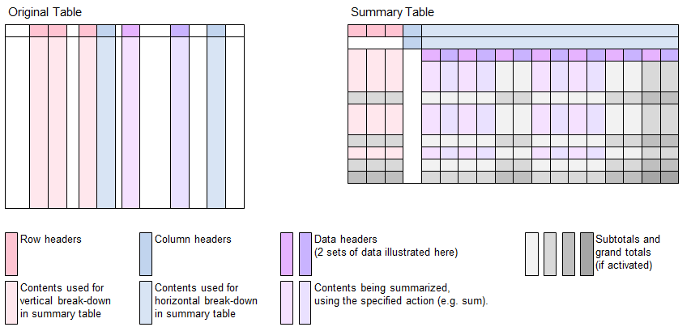

Function Names
table summarize, table summarize selected rowsDescription
Similar to pivot tables provided by Excel, the B4P functions table summarize and table summarize selected rows
create new tables containing condensed summary information. The summaries can be based on algorithmic actions of choice, for
example summing up, counting, taking the average values, etc.
Features:
- Filtering: The function table summarize selected rows allows to filter the rows of interest, ignoring the remaining ones.
- Rows: Specify 1 or more columns in the base data and distribute the data combinations vertically across over multiple rows.
- Columns: Specify 1 or more columns in the base data and distribute the data combinations horizontally across over multiple columns.
- Values: Specify 1 or more columns containing the data to be summarized.
- Actions: You can specify various algorithmic actions to create the summary, e.g. summing up, average, etc. If multiple data columns with values are specified, then different actions can be defined for each value. If no action is specified, then sum is assumed, being the most obvious action.
- Subtotals and grand totals: Optionally includie totals and subtotals for both columns and rows, along with the level (how deep the subtotals should nest in).

Call as: function
Restrictions
Indirect parameter passing is disabled
This function provides a table context for partial table specifications with table name and row number for selected function parameters
Parameter count
3 - 8
Parameters
| No. | Type | Description | ||||||||||||||||||||||||||||||
|---|---|---|---|---|---|---|---|---|---|---|---|---|---|---|---|---|---|---|---|---|---|---|---|---|---|---|---|---|---|---|---|---|
| 1. input |
string | Name of source table This table contains the base data for the summary. This table stays unchanged. | ||||||||||||||||||||||||||||||
| Opt. 2. code |
expression :string |
Expression to select rows This function parameter allows you filter the input data by selecting the rows to be included in the summary.
| ||||||||||||||||||||||||||||||
| 2 / 3. input |
string | Name of new summary table A new table with the specified name will be created for the summary information. | ||||||||||||||||||||||||||||||
| 3 / 4. input |
table columns | Data columns Specify 1 or more columns containig the data to be be summarized. Example: { Revenue, Net Margin }.
| ||||||||||||||||||||||||||||||
| Opt. 4 / 5. input |
string set |
summarizing actions Specify the summarizing actions (click on the link to see the complete list) for the corresponding data columns specified in the previous function parameter.
Default value: sum | ||||||||||||||||||||||||||||||
| Opt. 5 / 6. input |
table columns | Vertical breakdown Optionally list columns to do a vertical break-down across the rows.
For example consider { Continent, Country, City } to summarize the results down the rows, broken down by
continents, followed by countries and cities. The breakdown is done in the alphabetical order.
| ||||||||||||||||||||||||||||||
| Opt. 6 / 7. input |
table columns | Horizontal breakdown Optionally list columns to do a horizontal break-down across the columns.
For example consider { Year, Quarter, Month } to summarize the results along the columns, first by year, then followed by quarter and month.
The breakdown is done in the alphabetical order.
| ||||||||||||||||||||||||||||||
| Opt. 7 / 8. input |
set | Attributes A set of attributes can be defined to customize the summary. Every attribute consists of an attribute name and an attribute value. For this reason, the number of elements must be even, e.g. 0, 2, 4, etc. The attributes influnce the design and layout of the summary table. If, by mistake, the same attribute name is used repeatedly, then the last attribute assignment applies.
Default value: {} (no attributes specified. See table below for defaults.) |
Return value
| Type | Description |
|---|---|
| boolean | Success 'true' is returned if the table has contents. 'false' indicates taht the resulting table is empty. This could be due for following reasons: * Base data contains zero rows * Function call 'table summarize selected rows' has filtered out all data, leaving zero rows of data for creating the summary. |
Examples
table initialize( base data, {
{ Continent, Country, Town, Year, Quarter, Score 1, Score 2 },
{ Europe, UK, London, 2025, Q1, 100, 250 },
{ Europe, UK, London, 2025, Q1, 120, 260 },
{ Europe, UK, London, 2025, Q2, 110, 270 },
{ Europe, UK, London, 2025, Q3, 100, 280 },
{ Europe, UK, London, 2026, Q1, 110, 270 },
{ Europe, UK, Bristol, 2026, Q1, 140, 250 },
{ Europe, France, Paris, 2025, Q1, 120, 280 },
{ Europe, France, Lyon, 2025, Q1, 150, 270 },
{ Europe, France, Paris, 2025, Q2, 160, 250 },
{ Europe, France, Lyon, 2025, Q3, 120, 280 },
{ Europe, France, Lyon, 2026, Q1, 130, 290 },
{ Europe, France, Lyon, 2026, Q1, 120, 250 },
{ Asia, Japan, Tokyo, 2025, Q1, 110, 220 },
{ Asia, Japan, Osaka, 2025, Q1, 120, 230 },
{ Asia, Japan, Tokyo, 2025, Q1, 130, 240 },
{ Asia, Japan, Osaka, 2025, Q1, 140, 250 } } );
echo("Start pout simple, without any breakdown:");
table summarize( base data, pivot table, {Score 1, Score 2}, {sum, min} );
table list( pivot table );
echo("Pivot table without subtotals:");
table summarize( base data, pivot table, {Score 1, Score 2}, {sum, min}, {Continent, Country, Town}, {Year, Quarter} );
table list( pivot table );
echo("Pivot table with subtotals:");
table summarize( base data, pivot table, {Score 1, Score 2}, {sum, min}, {Continent, Country, Town}, {Year},
{ horizontal subtotals, -1, vertical subtotals, -1, single horizontal header, yes } );
table list( pivot table );
echo("Pivot table with subtotals and subtotal levels (vertical only):");
table summarize( base data, pivot table, {Score 1, Score 2}, {sum, min}, {Continent, Country, Town}, {},
{ vertical subtotals, -1, subtotal levels, yes} );
table list( pivot table );
echo("London and Tokyo only:");
rv[] = table summarize selected rows( base data, ([Town]=London,Tokyo),
pivot table, {Score 1, Score 2}, {sum, min}, {Country, Town}, Year );
table list( pivot table );
echo("Return value: ", rv[] );
echo("Empty table:");
rv[] = table summarize selected rows( base data, ([Town]=Madrid), // No Madrid inside, 0 rows summarized.
pivot table, {Score 1, Score 2}, {sum, min}, {Country, Town}, Year );
table list( pivot table );
echo("Return value: ", rv[] );
Output
Start pout simple, without any breakdown:
0 : [Data] | Score 1 | Score 2
1 : [Action] | sum | min
2 : | 1980 | 220
Pivot table without subtotals:
0 : Continent | Country | Town | Year | 2025 | 2025 | 2025 | 2025 | 2025 | 2025 | 2026 | 2026
1 : | | | Quarter | Q1 | Q1 | Q2 | Q2 | Q3 | Q3 | Q1 | Q1
2 : | | | [Data] | Score 1 | Score 2 | Score 1 | Score 2 | Score 1 | Score 2 | Score 1 | Score 2
3 : | | | [Action] | sum | min | sum | min | sum | min | sum | min
4 : Asia | Japan | Osaka | | 260 | 230 | | | | | |
5 : Asia | Japan | Tokyo | | 240 | 220 | | | | | |
6 : Europe | France | Lyon | | 150 | 270 | | | 120 | 280 | 250 | 250
7 : Europe | France | Paris | | 120 | 280 | 160 | 250 | | | |
8 : Europe | UK | Bristol | | | | | | | | 140 | 250
9 : Europe | UK | London | | 220 | 250 | 110 | 270 | 100 | 280 | 110 | 270
Pivot table with subtotals:
0 : Continent | Country | Town | Year | 2025 | 2025 | 2026 | 2026 | [Total] | [Total]
: | | | [Data] | Score 1 | Score 2 | Score 1 | Score 2 | Score 1 | Score 2
: | | | [Action] | sum | min | sum | min | sum | min
1 : Asia | Japan | Osaka | | 260 | 230 | | | 260 | 230
2 : Asia | Japan | Tokyo | | 240 | 220 | | | 240 | 220
3 : Asia | Japan | [Sub-T] | | 500 | 220 | | | 500 | 220
4 : Asia | [Sub-T] | [Sub-T] | | 500 | 220 | | | 500 | 220
5 : Europe | France | Lyon | | 270 | 270 | 250 | 250 | 520 | 250
6 : Europe | France | Paris | | 280 | 250 | | | 280 | 250
7 : Europe | France | [Sub-T] | | 550 | 250 | 250 | 250 | 800 | 250
8 : Europe | UK | Bristol | | | | 140 | 250 | 140 | 250
9 : Europe | UK | London | | 430 | 250 | 110 | 270 | 540 | 250
10 : Europe | UK | [Sub-T] | | 430 | 250 | 250 | 250 | 680 | 250
11 : Europe | [Sub-T] | [Sub-T] | | 980 | 250 | 500 | 250 | 1480 | 250
12 : [Total] | [Total] | [Total] | | 1480 | 220 | 500 | 250 | 1980 | 220
Pivot table with subtotals and subtotal levels (vertical only):
0 : Continent | Country | Town | Level | [Data] | Score 1 | Score 2
1 : | | | | [Action] | sum | min
2 : | | | Level | | |
3 : Asia | Japan | Osaka | | | 260 | 230
4 : Asia | Japan | Tokyo | | | 240 | 220
5 : Asia | Japan | [Sub-T] | 3 | | 500 | 220
6 : Asia | [Sub-T] | [Sub-T] | 2 | | 500 | 220
7 : Europe | France | Lyon | | | 520 | 250
8 : Europe | France | Paris | | | 280 | 250
9 : Europe | France | [Sub-T] | 3 | | 800 | 250
10 : Europe | UK | Bristol | | | 140 | 250
11 : Europe | UK | London | | | 540 | 250
12 : Europe | UK | [Sub-T] | 3 | | 680 | 250
13 : Europe | [Sub-T] | [Sub-T] | 2 | | 1480 | 250
14 : [Total] | [Total] | [Total] | 1 | | 1980 | 220
London and Tokyo only:
0 : Country | Town | Year | 2025 | 2025 | 2026 | 2026
1 : | | [Data] | Score 1 | Score 2 | Score 1 | Score 2
2 : | | [Action] | sum | min | sum | min
3 : Japan | Tokyo | | 240 | 220 | |
4 : UK | London | | 430 | 250 | 110 | 270
Return value: true
Empty table:
0 : Country | Town | Year
1 : | | [Data]
2 : | | [Action]
Return value: false
See also
table consolidate
table consolidate selected rows
table spread